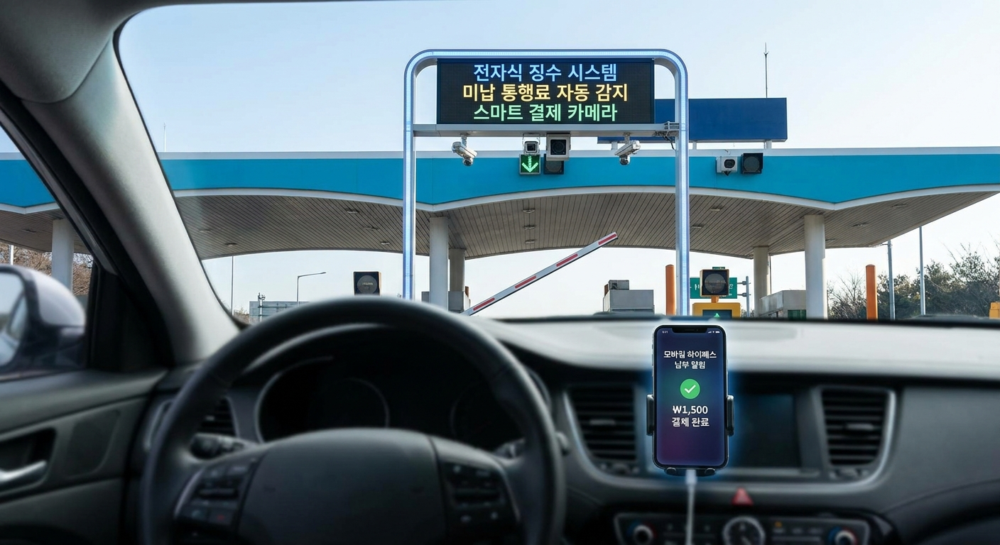
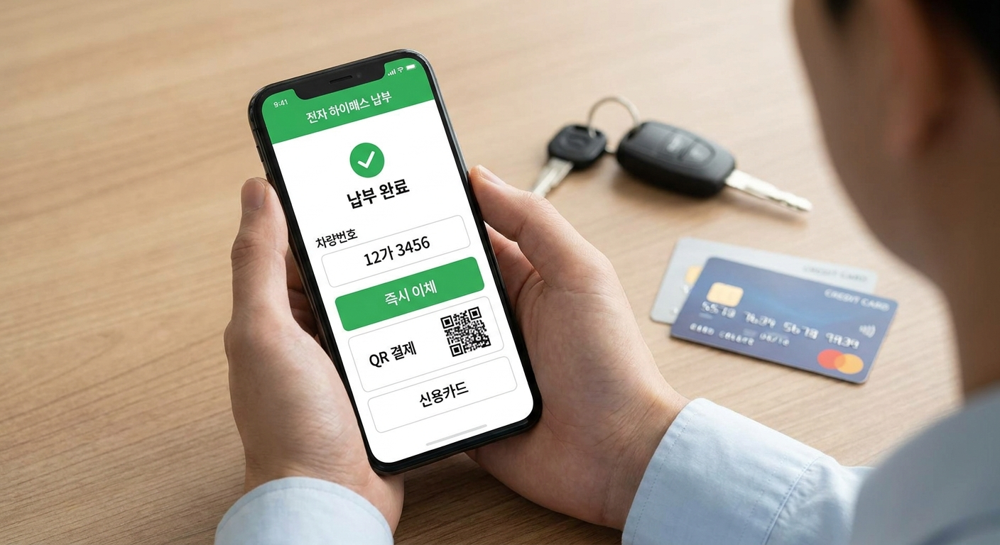

자동차 전용도로 미납 통행료 납부 방법과 가산금 부과 기준 — 범칙금 압류 전 독촉 절차 체크리스트
하이패스 단말기 오류나 잔액 부족, 또는 무정차 통과로 인해 자동차 전용도로 및 유료도로 통행료를 미납했을 경우, 단순 실수라면 최초 고지서 납부기한 내에는 원금만 납부하면 아무런 불이익이 없습니다.
그러나 유료도로법 제20조에 따라 독촉장 납부기한이 지나거나 고의적 무단통과(최근 1년간 미납 횟수 20회 이상 등)로 판정될 경우, 통행료 원금의 무려 10배에 달하는 부가통행료(가산금)가 강제 부과되며 차량 압류로 이어질 수 있습니다.
고속도로뿐만 아니라 지자체 민자 유료도로(강남순환로, 신공항고속도로, 일산대교 등)의 미납금은 각 운영사 홈페이지나 통합 앱을 통해 차량번호 조회만으로 즉시 납부가 가능합니다.

고속도로 및 자동차 전용도로 하이패스 게이트의 미납 통행료 감지 및 알림 시스템 / AI 제작 이미지
01 | 유료도로 미납 통행료, 범칙금으로 바로 넘어가지 않는 이유
운전을 하다 보면 하이패스 카드 오류, 단말기 전원 꺼짐, 선불카드 잔액 부족 등으로 톨게이트 경보음이 울리며 미납되는 상황이 발생합니다.
많은 운전자가 "경찰서에서 바로 과태료나 범칙금 고지서가 날아오는 것 아닌가" 불안해하지만, 통행료는 도로교통법상 범칙금이 아니라 유료도로법상 채무(이용료)에 해당합니다.
따라서 통행료 미납 즉시 벌점이나 면허 행정처분이 내려지는 것은 아니며, 도로 운영 주체(한국도로공사 또는 민자도로 법인)가 차량 등록 주소지로 1차 안내문과 고지서를 발송하여 자진 납부 기회를 부여합니다.
02 | 10배 부가통행료(가산금)가 부과되는 법적 기준 (유료도로법 제20조)
유료도로법 제20조 및 동법 시행령 제14조에 따르면, 통행료를 납부하지 않고 통과한 차량에 대해 일정 요건이 성립하면 통행료의 10배에 해당하는 부가통행료를 징수할 수 있도록 규정하고 있습니다.
모든 미납에 10배가 붙는 것은 아니며, 법령에서 정한 '상습적·고의적 회피' 행위에 해당할 때 발동됩니다.
⚠️ 통행료 10배 가산금이 강제 부과되는 4가지 사유
1. 위변조 카드·단말기 사용: 감면 대상이 아닌 차량이 감면 단말기나 타인 카드를 부정 사용한 경우
2. 독촉장 기한 경과: 1차 안내문, 2차 수납고지서에 이어 정식 '독촉장'이 발송된 후 지정 납부기한까지 미납한 경우
3. 상습 미납 차량: 최근 1년간 미납 횟수가 누적 20회 이상인 상태에서 추가 미납이 발생한 경우
4. 강제 징수 절차 돌입: 국세체납처분의 예에 따라 지자체나 세무서에 차량 압류가 의뢰된 경우
03 | 클릭 설계: 단계별 독촉 절차와 납부 시기별 청구 금액 비교표
미납 발생부터 차량 번호판 영치 및 재산 압류까지 이어지는 행정 절차와 각 단계별 청구 금액을 표로 비교해 드립니다.
| 처리 단계 |
발송 서류 및 시점 |
부과 금액 |
조치 사항 및 대응 요령 |
| 1단계: 자진납부 안내 |
미납일로부터 약 7~10일 내 카카오톡/문자/알림톡 |
통행료 원금 (100%) |
스마트폰 간편결제로 수수료 없이 즉시 납부 가능 |
| 2단계: 1차 수납고지서 |
미납 익월 초 일반우편 고지서 발송 (납기 약 15일) |
통행료 원금 (100%) |
가상계좌, 편의점 바코드, 지로 납부 가능 |
| 3단계: 정식 독촉장 |
납기 경과 후 등기우편 발송 (납부기한 약 10~15일) |
통행료 원금 + 체납 경고 |
마지막 원금 납부 기회! 반드시 기한 내 납부 필수 |
| 4단계: 부가통행료 부과 |
독촉장 기한 만료 후 부가통행료 고지서 발송 |
원금 + 10배 가산금 (총 11배) |
예: 3,000원 미납 시 33,000원 납부 고지 |
| 5단계: 강제징수·압류 |
가산금 체납 지속 시 지자체 차량 압류 촉탁 |
체납 총액 + 압류 해제 비용 |
자동차 등록원부 압류, 번호판 영치, 정기검사 거부 |
04 | 한국도로공사(재정) vs 민자·지자체 자동차 전용도로 차이점
많은 분이 고속도로와 도심 내 자동차 전용도로의 미납 시스템이 같다고 오해하지만, 운영 주체에 따라 조회 및 납부 경로가 완전히 분리되어 있습니다.
한국도로공사가 운영하는 전국 재정 고속도로는 '고속도로 통행료 익스프레스' 앱이나 도로공사 콜센터(1588-2504)에서 한 번에 통합 조회됩니다.
반면 강남순환도시고속도로, 용인서울고속도로, 신대구부산고속도로, 일산대교 등 민자 유료도로는 해당 민자 법인이나 지자체 통합 유료도로 납부 사이트에서 별도로 조회하셔야 합니다.
| 구분 |
한국도로공사 (재정 고속도로) |
지자체 민자 자동차 전용도로 |
| 대표 노선 |
경부선, 서해안선, 영동선, 중부선 등 |
강남순환로, 서부간선지하, 신공항고속, 미추홀대로 등 |
| 통합 조회 경로 |
'통행료 서비스' 앱, 도로공사 홈페이지 |
민자도로 포털(smarttoll.co.kr) 또는 개별 민자사 웹 |
| 고지서 발송 주체 |
한국도로공사 지사 |
각 민자사업자 또는 관할 지자체(서울시, 경기도 등) |
| 강제 징수 권한 |
국토교통부 승인 체납처분 |
지자체 지방세외수입 체납처분(지방세 징수법 준용) |

스마트폰 앱과 모바일 전자고지서를 활용한 미납 통행료 간편 조회 및 즉시 납부 / AI 제작 이미지
05 | 클릭 설계 체크리스트: 차량번호로 즉시 납부하는 5가지 채널
통행료가 미납되었음을 인지했다면 고지서가 집으로 날아오기 전이라도 아래 5가지 채널을 통해 차량번호 인증만으로 즉시 처리할 수 있습니다.
📱 미납 통행료 즉시 납부 실전 체크리스트
- [ ] 1. 고속도로 통행료 홈페이지 및 공식 앱: 회원가입 후 본인 명의 차량번호를 입력하면 미납 내역 실시간 조회 및 신용카드·계좌이체 납부
- [ ] 2. 티맵(TMAP) 및 카카오내비 연동: 내비게이션 앱에 등록된 차량 정보를 통해 미납 발생 알림 수신 시 원클릭 간편결제
- [ ] 3. 휴게소 무인 수납기 및 종합안내소: 고속도로 주행 중 들르는 고속도로 휴게소 식당가 옆 무인 수납기에서 차량번호 조회 후 카드 결제
- [ ] 4. 전국 편의점(GS25, CU, 세븐일레븐): 편의점 계산대 포스기(POS)에서 직원에게 '미납 통행료 수납' 요청 후 차량번호와 생년월일 조회로 결제
- [ ] 5. 한국도로공사 콜센터(1588-2504): 평일 업무시간 중 전화 상담원 연결을 통해 가상계좌 문자 발송 요청 후 즉시 입금
06 | 렌터카, 중고차 거래 시 이전 소유자 미납 통행료 처리법
중고차를 구매했거나 렌터카, 카셰어링(쏘카·그린카 등)을 이용할 때 발생하는 통행료 분쟁도 주의 깊게 살펴봐야 합니다.
중고차의 경우 이전 등록 시점 이전의 체납 통행료는 원칙적으로 전 차주에게 징수권이 있습니다. 다만 차량에 이미 압류 등록이 걸려 있다면 명의 이전 자체가 불가능하므로, 차량 매매 계약 시 반드시 '자동차등록원부(갑/을)'를 발급받아 압류나 저당 설정 여부를 확인해야 합니다.
렌터카나 카셰어링 이용 중 발생한 미납 통행료는 렌터카 회사가 이용 약관에 따라 등록된 결제 카드로 자동 청구하거나 이용자에게 납부 요청서를 전달합니다. 방치할 경우 대여 약관에 따른 지연 수수료가 추가될 수 있습니다.
07 | 부가통행료 10배 처분에 억울할 때 이의신청 방법
만약 단말기 기기 결함, 결제 카드사 전산 오류, 차량 도난 등 운전자의 고의가 아닌 사유로 독촉장을 받지 못하고 10배 가산금이 부과되었다면 이의신청을 통해 구제받을 수 있습니다.
도로공사나 민자도로 사업소에 '부가통행료 부과 처분에 대한 이의신청서'를 제출하고 단말기 A/S 접수증, 카드 승인 거절 내역서, 주소지 이전 등 불가피한 사유를 입증하는 서류를 첨부해야 합니다.
소명이 받아들여질 경우 10배 가산금은 면제되고 원래의 원금 통행료만 납부하도록 감면 결정이 내려집니다.
💡 하이패스 미납 방지 사전 예방책
선불 하이패스 카드를 쓰시는 분들은 잔액 부족 위험이 없는 '자동충전형 선불카드'나 신용카드사에서 발급하는 '후불 하이패스 카드'로 전환하시는 것을 추천합니다. 통행료 서비스 앱에 차량을 등록해두면 미납 발생 즉시 카카오톡 알림톡을 받아 과태료 위험을 원천 차단할 수 있습니다.
08 | 자동차 검사 및 번호판 영치로 넘어가는 체납 기준
독촉장 발송 이후에도 통행료를 장기 체납하여 체납액이 수십만 원 이상 누적될 경우, 관할 지자체와 경찰, 도로공사가 합동으로 단속에 나섭니다.
고속도로 톨게이트에는 번호판 자동인식 시스템(AVNI)이 설치되어 있어, 체납 차량이 톨게이트를 통과하는 순간 경보가 울리고 톨게이트 안전지대에서 단속 요원에 의해 현장 번호판 영치가 이루어집니다.
또한 자동차 정기검사 시 유료도로 통행료 및 과태료 체납 내역이 조회되어 체납금을 전액 납부하기 전까지는 자동차 검사 적합 판정을 받을 수 없게 됩니다.
09 | 통행료 미납 관련 자주 묻는 질문 FAQ
Q1. 하이패스 차로로 잘못 진입했을 때 후진해서 일반 차로로 가야 하나요?
A1. 절대 후진하거나 급정거하시면 안 됩니다! 대형 추돌사고 위험이 큽니다. 그냥 하이패스 차로를 그대로 통과하신 후, 목적지 요금소 출구 일반 차로 직원에게 말씀하시거나 추후 스마트폰 앱·인터넷으로 자진 납부하시면 수수료 없이 원금만 결제됩니다.
Q2. 이사 후 주소 변경을 안 해서 고지서를 못 봤는데 가산금이 붙었으면 어떻게 하나요?
A2. 자동차 등록원부상 주소지가 아닌 곳에 거주하여 고지서를 송달받지 못한 것은 원칙적으로 소유자 과실로 보지만, 최초 1회에 한해 주민등록초본 등 주소 이전 증빙을 제출하고 도로공사에 상담을 요청하면 가산금 감면을 심사받을 수 있습니다.
Q3. 통행료도 신용카드 포인트로 납부할 수 있나요?
A3. 네, 한국도로공사 통행료 수납 사이트 및 일부 편의점 수납기에서는 마이신한포인트, 위비꿀머니, KB포인트리 등 카드사 적립 포인트로 미납 통행료 결제가 가능합니다.
#미납통행료납부
#자동차전용도로통행료
#통행료가산금10배
#하이패스미납조회
#유료도로법20조
#민자도로미납납부
#통행료체납압류
#하이패스차로오류
#편의점통행료수납
#교통요금실무